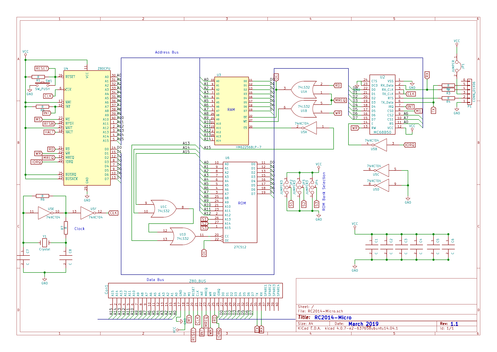

RC2014 Micro · Lesson 01 · Phase 1
The win: by the end you can point at any symbol on this one-page drawing and say what it is and which block it belongs to. That's the foundation for everything else in the mission.
This is the entire RC2014 Micro on one A4 sheet (Rev 1.1, March 2019, drawn in KiCad). It looks busy, but it's just nine functional blocks wired together by three buses. Once you have the reading vocabulary, the busyness disappears.

Every schematic uses the same handful of conventions. Learn these five and you can read any of them — start with this board.
U=chip, R=resistor, C=capacitor, Y=crystal, SW=switch, S=jumper, Con=connector. So U4, R7, C8, Y1 each name one physical part. The part number printed nearby (e.g. 27C512) tells you the type.CLK over by the crystal and another tagged CLK over at the CPU are the same wire — even though no line is drawn between them. This is how the sheet stays readable. Look for RESET, CLK, M1, RD, WR, MREQ, IORQ hopping around the page.A0–A15, top) and the Data Bus (D0–D7, bottom). Almost every chip taps both.VCC is +5 V, GND is 0 V. They're scattered everywhere; all VCC tags are one net, all GND tags another.RD, CE, WE) means the signal does its job when pulled low (0 V), not high. Most control and chip-select lines on this board are active-low.Now overlay structure on the drawing. Every part on the sheet lives in exactly one of these:
| CPU | U4 Z80 — top-left. Drives the address bus, trades bytes on the data bus, emits control signals. |
| Clock | Y1 7.3728 MHz crystal + two U5 inverters (U5E/U5F) + R6, R7, C7, C8 — bottom-left. Makes CLK. |
| Reset | SW1 push-button + R1 — top-left. Pulls RESET to restart the CPU at 0x0000. |
| RAM | U3 HM62256, 32K×8 static RAM — centre. Read/write memory; uses A0–A14. |
| ROM | U6 27C512, 64K×8 EPROM — centre. Holds firmware (BASIC / Small Computer Monitor). |
| Decode | OR gates U1/U10 (74LS32) + inverters in U5 (74HCT04) — centre-right. Decide who is selected and whether it's a read or write (CS, CE, RD, WR). |
| ROM bank | Jumpers JP2/JP3/JP4 (marked "ROM Bank Selection"; select nets S1/S2/S3) — drive ROM A13/A14/A15 to pick which 8K page of the 64K EPROM runs. |
| Serial | U2 MC68B50 ACIA + 6-pin FTDI header P1 + R3/R4 — right. The console, 115200 8-N-1. |
| Bus | Con1 40-pin RC2014 bus — bottom. Brings the address/data/control lines + 5V/GND/RX/TX out to a backplane. |
(Plus the supply: decoupling caps C1–C5 across VCC/GND, bottom-right.) Full table: Component Inventory.
The Z80 puts a 16-bit address on A0–A15 and says "memory or I/O?" (MREQ vs IORQ) and "read or write?" (RD vs WR). The decode block turns that into a single chip-select so exactly one of RAM, ROM, or the serial chip answers on D0–D7. Hold onto this — Lessons 04–05 trace it gate by gate.
Recall beats recognition. Answer from memory, then click — feedback is instant.
1. On the schematic, U4 is the —
2. Which reference designator is the 32K RAM?
3. Two wires both labelled CLK, far apart on the sheet, are —
4. An overbar over RD means it is asserted when the line is —
5. The "ROM Bank Selection" jumpers (JP2–JP4) select —
6. The MC68B50 (U2) gives the Micro its —
Open the RC2014 Micro schematic PDF and spend five minutes finding each of the nine blocks on it by eye. Then skim Grant Searle's Simple Z80 — the minimal design the Micro descends from — to see the same idea with even fewer chips.
Stuck on any symbol? I'm your teacher for this — ask me about any specific part, pin, or net on the schematic and we'll zoom in. When you can name the nine blocks and most designators from memory, say so and we'll start Lesson 02 — the clock block.